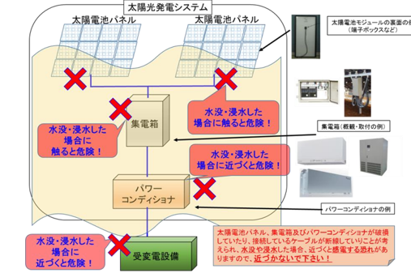
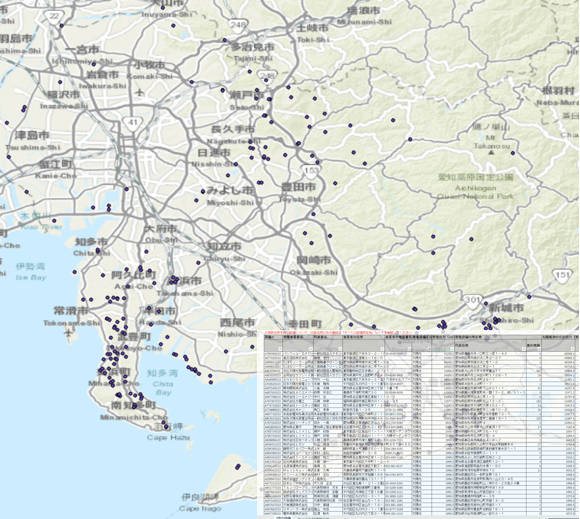

Photovoltaic power generation can use sufficient sunshine resources to
obtain electricity without the need for additional fuel input. It has the
advantages of low operating costs, flexible deployment, and environmental
friendliness. In Japan, photovoltaic power generation can not only reduce
the high carbon emissions brought by the energy industry but also make up
for its lack of resources. However, frequent natural disasters such as
typhoons and heavy rainfall have also had an impact on the development of
the photovoltaic industry that cannot be ignored.
Currently, Experts and practitioners have tried various methods to
identify potential candidates by analyzing indicators such as
socio-economic, geographical environment, and hazard factors. Although
this method takes into account the risks of natural disasters while
considering economic and environmental benefits, it is still relatively
vague and it is difficult to accurately and intuitively reflect the
exposure and vulnerability levels of these candidates. Enhance，we are
trying to adpapt a new method combining the Hydro-dynamics model with GIS
sytem, estimated the damage to PV caused by heavy rain.

In the first period, we collected the all the PV location from the
official website, and selet all the station with an efficiency higher
than 1MV, as well as other data like slope and DEM. Then, we
innovatively proposed the method introducing a hydraulic model to
analyze flood risks in photovoltaic power plants

The Rainfall-Runoff-Inundation (RRI) model is a numerical hydraulic tool
designed to simulate various hydrologic processes, including
rainfall-runoff dynamics, streamflow discharge, and floodplain
inundation, in an integrated manner. Furthermore, RRI plays a crucial
role in assessing future scenarios, such as the impacts of climate
change. Its compatibility with GIS system further enhances the accuracy
of simulations, making it a valuable tool for hydrological and
climate-related studies.
In this topic, we initially admapt to adopt the maximum precipitation in
Aichi Prefecture, predicting the damage to the local photovoltaic
industry and estimate the economic losses.
Rainfall-Runoff-Inundation (RRI) model, ICHARM

RTF is an indicator proposed as the resource occupancy to capacity
ratio, the most significant feature is to compare the occupancy rate of
a kind of resource on each person to its whole amount. In this study, we
are going to use RTF evaluate PV's lose caused by the flood hazard.Then
we will consider the utilization for Climate model to predict the future
trend of solar power in Janpan.
References:
[1] Dem, P., Hayashi, K.,Fujii, M., Tao, L., 2024. Resources time
footprint indicator extension for evaluating human interventions in
provisioning ecosystem services supply. Science of The Total Environment
946, 173852.https://doi.org/10.1016/j.scitotenv.2024.173852
[2] Tao, L., Hayashi, K., Shiraki, H., Huang, X., Dem, P., 2024.
Exploration of determinants underlying regional disparity in rooftop
photovoltaic adoption: A case study in Nagoya, Japan. Applied Energy
367, 123469. https://doi.org/10.1016/j.apenergy.2024.123469